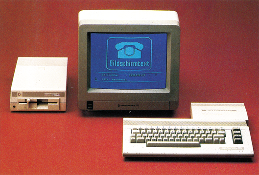
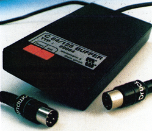
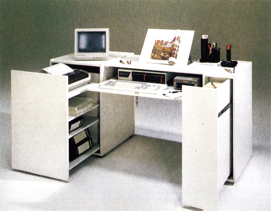

Aktuell
Durchbruch gelungen?
Autos, Reisen und Farbfernseher, natürlich Btx-fähig, und jede Menge Blumensamen gab's zu gewinnen. Ob wohl der Herr über Briefe, Päckchen und Telefone, unser ewig strahlender Postminister, Herr Schwarz-Schilling, auch selbst daran glaubt, daß die Btx-Saat aufgeht?
Vom 12. bis 18.9.1986 wirkte die Konstabler Wache in Frankfurt wie ein bunter Jahrmarkt und Schwarz-Schilling ließ es sich nicht nehmen, die Btx-Messe persönlich zu eröffnen.
Zelte, Gaukler, Bands, Entertainer und Malwettbewerbe — dazwischen viel Prominenz aus Politik und Wirtschaft. Und erstaunlich genug, tatsächlich viele einfache Bürger, allen voran die Jugend.
Nur ein geschicktes Marketing für die Gewinnung neuer Btx-Kunden? Ja und nein, denn die Überwindung von Hemmschwellen und Berührungsängsten mit neuen Technologien ist die wichtigste Voraussetzung für eine Akzeptanz des Mediums Btx als vielseitig verwendbares »Werkzeug« in breitesten Schichten der Bevölkerung.
Hierbei — dem Run der privaten Haushalte auf Btx-Terminals — irrten alle Prognosen. Nach Auskunft der rheinland-pfälzischen Landesregierung vom 30.6.86 wird derzeit das neue Medium nur von etwa 20 Prozent privat genutzt. Ursprünglich überwiegend für den privaten Datenverkehr geplant, sind vor allem technische, staatliche und industrielle Verzögerungen sowie Versäumnisse dafür verantwortlich. Die zu hohen Gerätepreise trugen ihr übriges dazu bei.
Wir fragten den Minister nach seinen Plänen.
64'er: »Wie wollen Sie sicherstellen, daß der Einkaufspreis der Post eine monatliche Gebühr von etwa 50 Mark für ein Schwarzweiß-Gerät nicht überschreitet?«
Schw.-Sch.: »Die Deutsche Bundespost wird der Industrie einen Auftrag über 50000 multifunktionale Telefone, die Btx-Gerät und Telefon in sich vereinigen, erteilen, um die Gerätesituation auf diesem Sektor zu verbessern.«
64'er: »Was wird die Post unternehmen, um diese Multi-Telefone bekannt zu machen, Werbung allein war ja wohl bisher ziemlich erfolglos?«
Schw.-Sch.: »Wir werden Interessenten im Rahmen eines Schnupperangebots diese Geräte drei Monate lang ohne zusätzliche Gebühren zur Verfügung stellen, damit sie diese an ihrem Arbeitsplatz kennenlernen können.«
64'er: »Und wie wollen Sie erreichen, daß sich die Teilnehmerzahlen erhöhen?«
Schw.-Sch.: »Die Post unterstützt die Entwicklung eines neuen Btx-Decoders, der den Gerätemehrpreis auf deutlich unter 500 Mark senken wird.«
64'er: »Welche Möglichkeiten sehen Sie, um auch den privaten Bürger als Btx-Anwender zu gewinnen?«
Schw.-Sch.: »Durch direkte Begegnungen mit praxisnahen Btx-Anwendungen wie hier auf dieser Veranstaltung. Nur durch praktische Informationen können wir Bildschirmtext der breiten Öffentlichkeit verständlicher und begreifbarer machen, um weitere Teilnehmer zu gewinnen.«
Des weiteren führte der Minister aus, daß Banken, Handel, Industrie, Handwerksbetriebe und Selbständige sehr rasch die Bedeutung von Btx als preiswertem Informationssystem erkannt und eingesetzt haben.
Einige Beispiele: Das Statistische Bundesamt beantwortet sofort Fragen nach Auftragslage, Umsatzsituation oder Nettoproduktion und Erzeugerpreisen der deutschen Wirtschaft.
Schneller als auf jedem Redaktionsschreibtisch der Zeitungen sind die topaktuellen Finanz- beziehungsweise Wirtschaftsnachrichten der Vereinigten Wirtschaftsdienste bis 22 Uhr abrufbar. Flugreisen, Hotelzimmer, Mietautos oder Karten für die Oper, man bucht per Taste. In Frankreich und England sind bereits 90 % aller Reisebüros am Btx-Netz. Schon über 6000 Fotohändler bestellen ihre Artikel bei der Hama-GmbH in Schwaben. Rund 7000 Händler der AEG/Telefunken wickeln ihre Anforderungen über das neue Medium ab.
Es gibt natürlich auch negative Erfahrungen: Der Brockhaus-Verlag hatte auf 8000 Btx-Seiten ein umfassendes Personenlexikon angeboten. Ein falsches Produkt zur falschen Zeit? Der klassische Nachfrager dürfte derzeit wohl kaum über ein Btx-Terminal verfügen. Ähnlich ist es im Großversandhandel (Quelle, Otto, Neckermann und so weiter), der die Bestelleingänge »eher bescheiden« nennt und von Ausstieg spricht. Nun ja, ich sitze auch lieber abends bequem im Sessel und blättere mit Muße in einem gedruckten Katalog — bestellen würde ich dann schon per Tastendruck.
Daß nicht nur Waren, zum Beispiel wird der Obst- und Gemüsehandel zwischen Zentrale, Groß- und Einzelhandel der Rewe-Kette über Btx gesteuert, sondern auch berufliche Bildung über das neue Informationssystem angeboten werden kann, beweist nach gründlichen Feldversuchen die Bundesanstalt für Arbeit. Im Oktober werden im gesamten Bundesgebiet 100 Berufs-Informations-Zentren mit Btx-Terminals eingerichtet. Und eine tagesaktuelle Vermittlung von Lehrstellen über die Arbeitsämter gibt es auch schon. Wie zu erfahren war, plant die Deutsche Lesegesellschaft in Mainz, themenbezogene Informationen über empfehlenswerte Literatur per Bildschirmtext bundesweit anzubieten.
Der Durchbruch scheint gelungen. Nicht nur die neuen bildschirmtextfähigen Komforttelefone von Siemens und Loewe-Opta, oder das auf die über 2 Millionen meist privaten Besitzer von Heim- beziehungsweise Personal Computern zielende Decoder-Modul von Commodore belegen die Umkehr des bisherigen, eher pessimistischen Trends. Allein in den ersten 7 Tagen des Septembers gab es mehr als 250000 Btx-Nutzungen — soviel wie nie zuvor!
Eines macht die bisherige Entwicklung deutlich: Gute Angebote und pfiffige Ideen sind die einzigen Garanten dafür, daß ein technisch weit ausgereiftes System von potentiellen Teilnehmern auch wirklich akzeptiert wird.
(Rüdiger Werner/og)
Pufferspeicher für C 64/C 128-Drucker
Wer Daten puffert, braucht auf seinen Drucker nicht mehr zu warten. Diesen Vorteil soll der neue Druckpuffer von Wiesemann, der einfach zwischen Computer und Drucker gesteckt wird, bieten. Den Druckpuffer gibt es in zwei Versionen, einmal mit 32 KByte (198 Mark) und einmal mit 64 KByte (248 Mark). Nach Angaben des Herstellers sollen beide Modelle neben der Datenpufferung auch in der Lage sein, eine Codewandlung, das heißt eine Umwandlung von verschiedenen ASCI-Tabellen, durchführen zu können.
Info: Wiesemann & Theis GmbH, Winchenbachstr. 3-5, 5600 Wuppertal 2

Steckplatz-Erweiterung für User- und Expansion-Port
Für alle Anwender, die mit dem einen Expansion- oder User-Port-Steckplatz nicht auskommen, bietet Dela-Elektronik jetzt Steckplatzerweiterungen an. Damit wird es möglich, mehr als nur ein Gerät oder Modul an den Ports zu betreiben. Erhältlich sind eine 4fach-Expansion-Port-Erweiterung, die vier schaltbare Steckplätze bietet (Bausatz: 69 Mark, Fertiggerät 99 Mark) sowie eine 3fach-User-Port-Erweiterung (Bausatz: 30 Mark, Fertiggerät: 35 Mark).
Info: Dela-Elektronik, Maastricher Str. 23, 5000 Köln 1, Tel. (0221) 517081
C 64 als Meßplatz für radioaktive Strahlung
Wie man aus dem C 64 mit geringem Aufwand einen hochempfindlichen Strahlungsmeßplatz machen kann, wurde auf der Hobby-Elektronik 1986 gezeigt. Zum Betreiben am C 64 oder C 128 sind nur das Strahlenmeßgerät und ein Interface notwendig.
Nachweisbar sind Gamma-/ Röntgenstrahlen (20 keV bis 2 MeV) und Beta-Strahlung ab 500 keV.
Als Einsatzgebiet sollen sich die Überwachung des Strahlenhintergrundes in der Umgebung kerntechnischer Anlagen, die Untersuchung von Lebensmitteln auf Rückstände von Cäsium 137 oder die Messung der Radon-Emanation (Radon-Tochterprodukte) in der Atemluft anbieten.
Die Meßdaten werden vom Interface so aufbereitet, daß sie direkt über den User-Port einzulesen sind. Das kann mit eigener Software oder mit eigens dafür angebotenen Programmen geschehen. Aktuelle Preise lagen bei Redaktionsschluß noch nicht vor.
(og)Info: Genitron Instruments GmbH, Heerstr. 149, 6000 Frankfurt 90
Vizawrite vor Weihnachten billiger
Bereits in der Vorweihnachtszeit senkt DTM, der deutsche Distributor für Viza Software, die Preise für die Textverarbeitungsprogramme Vizawrite 64 und Vizawrite Classic. Die Version für den C 64 ist nun für 98 Mark erhältlich. Vizawrite Classic für den C 128 kostet ab sofort 298 Mark.
Registrierte Anwender von Vizawrite Classic können die im 1541-Format erworbene Programmdiskette gegen eine Diskette im Format des Diskettenlaufwerks 1571 umtauschen. Dieser Update wird auf der Originaldiskette gegen Vorauskasse von 40 Mark — oder für 45 Mark per Nachnahme — innerhalb von 8 Tagen vorgenommen.
Für registrierte Anwender wurde weiterhin eine Software-Hotline eingerichtet. Montags bis freitags von 13 bis 15 Uhr steht Ihnen Herr Hoffmann für Fragen zu Viza-Produkten unter der Rufnummer 06121/407989 zur Verfügung.
(nj)DTM, Bornhofenweg 5, 6200 Wiesbaden, Tel. 06121/407989
Der Konflikt: Buch kontra neue Medien
Vom 1. bis 6. Oktober wurden auf der Frankfurter Buchmesse wieder alle Rekorde des Vorjahres übertroffen: Fast 7000 Verlage mit rund 320000 ausgestellten Buchtiteln, darunter etwa 92000 Neuerscheinungen.
Weit weniger erfreulich klingen die »Empfehlungen des Wissenschaftsrates zum Magazinbedarf wissenschaftlicher Bibliotheken«. Im Jahr 1984 belief sich der Buchbestand aller Universitätsbibliotheken auf insgesamt 66 Millionen Bände. Der Zugang an Büchern und Fachzeitschriften lag 1984 bei 2,3 Millionen Einheiten. Bildlich ausgedrückt verlängern sich die Bücherregale einer einzigen Universitätsbibliothek jährlich um rund 1,5 Kilometer.
Der Wissenschaftsrat »schlägt deshalb vor, für einen Zeitraum von 10 Jahren die Kosten der Überführung der Kataloge in EDV-Kataloge und die Kosten ihrer Vernetzung durch eine Sonderfinanzierung aufzubringen«. Erfahrungen aus den USA, zum Beispiel Probleme der Haltbarkeit von Daten, der Akzeptanz von Ausdrucken bei den Benutzern oder Zugriffsgeschwindigkeiten bei optimalen Speicherplatten (CD-ROM), zeigen die Brisanz des Themas »Bücher und Computer«.
Aber es kommt noch weitaus schlimmer: Der Börsenverein-Vorstand verbot der Bertelsmann Software-GmbH, die Daten des »Verzeichnisses lieferbarer Bücher« (VlB), das Bertelsmann zusammen mit anderen Daten auf CD-ROM gespeichert hatte, über ihr neues Programm »Book-Turm« dem interessierten Fachpublikum überhaupt vorführen zu dürfen. Der Krach war perfekt.
Wie funktioniert »Book-Turm«? Über eine PC-Oberfläche wird der Datenbank-Zugriff ohne Zeitverzögerung auf die gewünschte Information ermöglicht. Die Datenspeicherung auf CD-ROM, etwa 420 MByte (gleich 27000 Schreibmaschinenseiten), liefert Klartextergebnisse der Suchanfrage!
Über eine Funktionstaste kann der Anwender das dem Text zugeordnete Bild oder gar einen entsprechenden Kurzfilm auf den Monitor rufen. Wem das nicht genügt, der mag sich noch den Verstärker zuschalten, um mittels Stereoton das sensuelle Erlebnis zu komplettieren (als Video-Player fungiert der Phillips VP 831, als Verstärker dient ein Telefunken RA 100).
Zunächst werden Gespräche des Börsenvereins mit qualifizierten Anbietern von CD-ROM-Software geführt, also mit Bertelsmann, dem Battelle Institut und Whitaker in London, um Testproduktionen zu realisieren. Anschließend wird ein mehrmonatiger Praxistest unternommen. Schließlich wird der Börsenverein als Lizenzträger entscheiden, ob und mit wem das VlB als CD-ROM produziert werden soll.
(Rüdiger Werner/bj)Orgatechnik-News
Der Andrang war groß und die Publikum überwiegend fachkundig — so hörte man es immer wieder aus dem Mund der Aussteller. Die Orgatechnik ist eine Gelegenheit, im Herbst, kurz vor dem Weihnachtsgeschäft, noch neue Produkte vorzustellen und einem interessierten Publikum zu zeigen. So gab es denn auch auf den Ständen derjenigen Firmen, die diese Entwicklung vorhergesehen haben, einiges Neues zu sehen. An manchen anderen Ständen gab es allerdings nur das, was man schon auf der CeBIT im Frühjahr vorgestellt hatte.
Daß der Druckermarkt in Bewegung gekommen ist, zeigte sich auf der Orgatechnik extrem deutlich. Fast alle Hersteller waren vertreten und hatten zum Großteil auch neue Produkte im Köfferchen. Dabei waren drei Tendenzen zu erkennen: Trend 1: Drucker werden billiger. Durch höhere Automation und Konkurrenzdruck haben viele Hersteller die Preise für ihre Drucker gesenkt beziehungsweise bringen neue Modelle zu günstigen Preisen auf den Markt. So bietet Seikosha mit dem SL-80AI einen 24-Nadel-Drucker bereits für 1298 Mark an. Auch der Preis für den Epson EX-800 hat sich auf 1898 Mark (vorher 2998 Mark) verringert.
Trend 2: Die Nadeln kommen. Fast jeder Druckerhersteller hat mittlerweile einen 24-Nadel-Drucker im Programm. Auch wenn die Preise derzeit noch relativ hoch sind, so scheint dies der zukünftige Standard der Nadel-Matrixdrucker zu sein.
Trend 3: Die Laserdrucker sind da. Für den professionellen Einsatz und für das »Desktop Publishing«, das heißt der kompletten Erstellung einer Druckseite auf dem Computer einschließlich aller Grafiken, haben sich die kleinen Laserdrucker bewährt. So wurden denn auch einige neue Modelle vorgestellt. Wer noch keinen Laserdrucker dabei hatte, wußte zumindest über eine solche Entwicklung zu berichten. Mehr Neuigkeiten von der Orgatechnik stellen wir Ihnen in der nächsten Ausgabe vor.
(aw)Erfolg für Citizen
Seit knapp einem Jahr gibt es Citizen-Drucker, und sie waren erfolgreich. Mit 15000 verkauften Druckern im Jahr 1986 hat Citizen nach eigenen Angaben einen Marktanteil von 8 Prozent erreichen können. Zur Feier dieses Erfolges wurde am 8. September ein vergoldeter 120 D an den erfolgreichsten Fachhändler, Dietmar Zankl, übergeben. Nach Aussagen des Geschäftsführers des deutschen Distributors (Synelec Datensysteme GmbH), Wolfgang Schäfer, ist dieser Erfolg zu mehr als zwei Dritteln auf dem Modell 120 D (unserem Referenzdrucker der Preisklasse II) beziehungsweise LSP 10 aufgebaut. Die restlichen 30 Prozent entfallen damit auf die MSP-Reihe, die es jetzt auch in einer verbesserten Version gibt.
(aw)Info: Synelec Datensysteme GmbH, Postfach 151727, 8000 München 15
Computertisch
Ein Schreibtisch der den Computer samt Peripherie in sich aufnimmt, ist der neue »Praktisch«. Er ist mit 170 und 190 cm Breite lieferbar. Durch verschiedene Holzarten und Lackausführungen hat er als vollwertiges Möbelstück auch im Wohnzimmer Platz. Während des Arbeitens finden sämtliche Computer-Zubehörteile auf dem Tisch genug Raum zur Unterbringung. Bei geschlossenen Schubladen paßt das Ganze in die geräumigen Fächer des Tisches. Der Preis für diesen Tisch beträgt etwa 2000 Mark. Um eine Übersicht zu erhalten, können Sie bei untenstehender Adresse einen Katalog anfordern.
(og)Info: Franz Josef Wonnemann GmbH, Postfach 2527, 4840 Rheda-Wiedenbrück, Telex 9312401

Klein aber fein
Für den C 64 und den C 128 gibt es ein neues Floppy-Laufwerk. Das Gerät kostet 399 Mark und soll fast 100 Prozent kompatibel zur 1541 sein. Es besticht durch seine kompakte Bauweise und sein sehr ruhiges und stabiles Laufwerk. Durch einen externen Netztrafo treten die Wärmeprobleme, mit denen die 1541 oft zu kämpfen hat, erst gar nicht auf. Wir werden das neue Diskettenlaufwerk in einem Test noch ausführlich unter die Lupe nehmen, wobei natürlich auch die Verträglichkeit mit erhältlicher Software und Beschleunigungssystemen untersucht wird.
(ks)Info: Andreas König Electronic (Rex-Datentechnik), Stresemannstraße 11, 5800 Hagen 1, Tel. 02331/32734-5 und 02331/16979
Falsche Nummer
Die Nummer der Kobra-Mailbox (02331/16401), die in vielen Mailboxen herumgeistert, ist falsch! Dies ist die Rufnummer einer Privat-Person. Rufen Sie dort bitte nicht mehr an. Sobald wir die richtige Nummer der Kobra-Box vorliegen haben, werden wir sie veröffentlichen.
(og)320-KByte-RAM-Erweiterung für den C 64
Von nun an soll es mit dem C 64 keine Speicherplatzprobleme mehr geben. Mit der neuen RAM-Erweiterung für den C 64 können Sie Ihren Computer auf 320 KByte RAM aufrüsten. Die Erweiterung, die in den Computer eingebaut wird, soll sich intern auf 1 MByte und extern auf maximal 16 MByte ausbauen lassen. Das Besondere an der RAM-Erweiterung ist das Betriebssystem B.M.S, was für »Bank Memory Select« steht. Mit diesem Betriebssystem sollen Sie durch einfachen Tastendruck eine der fünf 64-KByte-Bänke ansprechen können. In jeder dieser Bänke kann sich ein aktives Programm befinden. Darunter ist zu verstehen, daß Sie zum Beispiel in Bank 1 mit Vizawrite und gleichzeitig in Bank 2 mit Vizastar arbeiten können. Es sei also nicht erforderlich, eines der Programme zu unterbrechen, vielmehr ließe sich von einem laufenden Programm ins andere wechseln ohne irgendwelche Daten zu verlieren. Diese erstmals eingesetzte Bank-Select-Methode wurde dadurch realisiert, daß alle erforderlichen Prozessordaten wie Programmzähler, Prozessorstatusregister, Akku, X- und Y-Register in einem zusätzlichen RAM im I/O-Bereich zwischengespeichert werden. Außerdem wird die gesamte 64-KByte-Bank inklusive Zeropage umgeschaltet. Das neue Betriebssystem soll weitestgehend kompatibel zu bestehender Software sein, weil die Routine, die die Bänke umschaltet, in einem Speicherbereich liegt, der von keinem kommerziellen Programm genutzt wird: in den Spiegelbereichen der Controller- und Port-Bausteine.
Zudem ist nach Angaben des Herstellers ein SpeedDos- und Prologic-DOS-kompatibler Floppy-Speeder eingebaut, der etwa 10mal schneller laden und wahlweise mit 35 oder 40 Spuren arbeiten soll.
Ein im Betriebssystem integrierter Monitor unterstützt das Arbeiten in Maschinensprache.
Auf Tastendruck läßt sich eine von vier Hardcopy-Routinen aufrufen, die den augenblicklichen Bildschirminhalt zu Papier bringt, unabhängig davon, ob nun gerade ein Textbildschirm oder eine HiRes-Grafik angezeigt wird.
Vier Zeichensätze sorgen dafür, daß sich neben den C 64-Zeichen auch die deutschen Umlaute darstellen lassen. Das Ganze natürlich mit einer Tastaturbelegung, die der DIN-Tastatur entspricht.
Wenn Sie einen Drucker mit Centronics-Schnittstelle haben, können Sie ihn direkt an den User-Port anschließen.
Die RAM-Erweiterung eignet sich nicht nur für den reinen Anwender, der mit mehreren Programmen gleichzeitig arbeiten möchte; auch dem Programmierer bietet sie einiges. So wäre zum Beispiel eine RAM-Floppy oder ein zusätzlicher Floppy-Speeder denkbar, der ähnlich funktioniert wie Prologic-DOS oder Turbo-Trans, also den Inhalt einer Diskette ohne Decodierung einliest und erst im Speicher für die entsprechende Umformung sorgt.
Die Erweiterung ist mit dem, was sie leistet, jedem, der häufig mit dem C 64 arbeitet, zu empfehlen. Die Anschaffungskosten liegen je nach Ausstattung zwischen 395 und 495 Mark (mit oder ohne Floppy-Speeder und mit oder ohne Einbau). Der Einbau der RAM-Erweiterung in Eigenregie ist nur dem Erfahrenen zu empfehlen. Alle anderen, die sich für den Kauf entscheiden, sollten den Umbau vom Fachhandel durchführen lassen oder ihren C 64 zum Hersteller oder Vertreiber der Erweiterung einschicken.
(ah)CTJ Computer-Technik Karl Junges, Spieckern 11, 5600 Wuppertal 23, Tel. 0202/ 612011